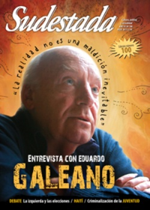

Buscar
"La realidad es más poderosa que las voces que la interpretan"
Desde una mirada profundamente latinoamericanista, y con un mítico café de Montevideo como telón de fondo, Eduardo Galeano recorre el presente del continente, las impresiones de su extensa obra, su infancia de pibe de barrio y nos deja fragmentos de sus reflexiones certeras, siempre con el futuro en el horizonte. por Nadia Fink e Ignacio Portela
Edición N° 100
Julio 2011
Revista bimensual
Comprar edición impresaSumario
- "La realidad es más poderosa que las voces que la interpretan"
- Cien veces no debo
- La izquierda ante el desafío electoral
- El estigma de los olvidados
- Haití, un pueblo que resurge de los escombros
- La manía de no callar
- En la fragua de los versos
- Museo a cielo abierto
- Los ojos de Palestina
Compartir Articulo
Pareciera que ya casi todo está dicho sobre Galeano. A lo largo de estos años ha charlado con miles de personas, ha dado entrevistas a medios conocidos y no tantos, ha viajado para estar presente, en cuerpo y palabra, a lugares donde los oprimidos dicen "basta" y el poder se siente incomodado. También a otras regiones en las que los poderosos son los que parecen ganar la partida. En cada injusticia, en cada historia silenciada, en cada dignidad pisoteada está Galeano dispuesto a ponerle voz a aquellos que no la tienen (o, mejor, que la tienen pero no pueden gritarla). El escritor que supo definirse como un "cazador de palabras", que fue haciendo su camino a través del lenguaje para empezar a tachar, recortar y reducir hasta encontrar la palabra precisa, esa que no deja duda de lo que quiere transmitir; el hombre que reniega del rótulo de intelectual porque no concibe el puro pensamiento alejado del mundo de los sentires; el niño que se soñaba jugador de fútbol como buen uruguayo; el adolescente que dio sus primeros besos bajo un tablado, el mismo que se inició en la quijotesca misión de defender a los desamparados nos cuenta, en esta charla con el mítico Café Brasilero de Montevideo como escenario, sobre la esperanza que le dan la actualidad latinoamericana y las revueltas en Medio Oriente, el problema de invisibilización que hasta hoy padecen los pueblos originarios en la historia oficial, la importancia de la diversidad en la política como en la vida y la actualidad de un Uruguay con el Frente Amplio en el gobierno.
De todo eso y algo más habló Galeano con Sudestada. Porque, si bien es cierto que sobre él está casi todo dicho, este es nuestro Galeano.
De intelectuales y rebeliones
Montevideo está nublado, frío, parece que va a llover en cualquier momento. Eduardo llega dos minutos antes de la hora acordada y se apena por el día. "Montevideo es mucho más lindo cuando hay sol. Como hay costa es muy caminable, pero cuando está nublado la ciudad se agrisa y la gente también, parece que se contagian mutuamente. Y eso que ya de por sí somos de tiempos lentos. Una vez escuché en Centroamérica en una reunión grande que alguien dijo 'triste como uruguayo contento', por el estilo nacional así tristón, lento. Como el fútbol uruguayo, que es lento, recibís la pelota, pensás, en la vieja, en la novia y eso lleva un tiempo...".
-¿Para qué creés que sirve la escritura en estos tiempos de guerra y negocios?
-Supongo que para algo sirve, porque guerra y negocios ha habido en la historia del mundo desde hace siglos y milenios; sin embargo, la escritura sobrevivió. Quiere decir que algún sentido tiene dejar por escrito ciertas impresiones o ideas. Una vez descubrí en la Biblioteca Nacional en Madrid, hace algunos años ya, cuando estaba trabajando en la trilogía Memoria del Fuego, que implicó un trabajo de horas y horas en distintas bibliotecas del mundo. En aquellos años no existía Internet y a veces me tenía que comer un libro entero para saber una información puntual; pero esas búsquedas eran al mismo tiempo muy gratificantes porque había libros gordos y antiguos y a veces buscando a alguien, más allá de si lo encontraba o no, aparecían otras cosas inesperadas, las que no estaba buscando pero me encontraban a mí. Y en unos de esos andares, encontré un libro de un sacerdote jesuita sobre la lengua guaraní, con la historia de los primeros contactos de los conquistadores con esa lengua y con las culturas que expresaba; y entonces en ese libro encontré que la escritura contaba una historia que valía un relato, que era digna de ser escrita realmente. En aquel libro había un diccionario y consulté algunas palabras guaraníes que él había recogido hacía ya como un siglo y medio; no sé por qué busqué la palabra "papel", estaba pero en castellano y remitía a una página y ahí encontré la historia sobre que unos sacerdotes habían llegado a la zona donde vivían los chiriguanos, los guaraníes. Estos, en busca de la tierra sin mal y sin muerte, habían llegado hasta la espalda del imperio de los incas, venían emigrando desde las costas del Brasil o de Paraguay, cada vez más hacia el oeste y allí se habían quedado. Y entonces, vienen los sacerdotes, en unas mulas con alforjas donde había entre otras cosas libros, supongo por el relato que eran biblias, libros de catecismo, y los indios estos nunca habían visto libros y nunca habían visto el papel tampoco, entonces con mucha curiosidad se acercaron a esos extraños objetos que estos curas habían traído y tocaron el papel y preguntaron: ¿para qué sirve esto? Los curas habían traído un intérprete guaraní, de modo que pudieron entender lo que ellos querían saber. Los curas les dijeron: "sirve para enviar mensajes a los amigos que están lejos" y entonces los indios bautizaron el papel, porque uno sólo sabe los nombres de las cosas que conoce o de las cosas que imagina que quisiera uno que existieran. Y entonces le pusieron de nombre "piel de dios". Me pareció muy hermosa la historia y digna de ser escrita pero, al mismo tiempo, es un homenaje a la literatura en cierto modo, porque hay palabras que merecen ser escritas en la piel de dios y en todo caso esa es una responsabilidad de todos los que escribimos, al menos los que todavía creemos que vale la pena escribir y leer en papel, yo necesito que el libro esté impreso, que el libro tenga textura, que tenga olor, color, que pueda apretarlo contra el pecho o contra el oído, sino conmigo no cuenten, con esas innovaciones tecnológicas no cuenten.
-Con respecto a los últimos sucesos que han ocurrido en Medio Oriente y en los países del norte africano, ¿qué te genera que sigan existiendo este tipo de rebeliones y que el poder se sienta, cada tanto, un poco amenazado?
-Me dio mucha alegría comprobar que los especialistas se pueden equivocar, o sea, que la realidad es más poderosa que las voces que la interpretan o que la anuncian, porque ningún profeta anunció que esto iba a ocurrir y ningún especialista pensó que eso era posible; y sin embargo, ocurrió. Por suerte la realidad conserva esa capacidad de asombro que te permite continuar viviendo sin confundir la realidad presente con un inevitable destino, como una fatalidad escrita en los astros; y que te permite creer que mañana no es otro nombre de hoy, que todo puede cambiar, más allá de lo que uno espera o sabe. Y en eso me parece que, pase lo que pase con este proceso, que sigue vivo, que está cambiando, alterando la realidad, en países donde la realidad parecía inalterable es una fuente de esperanza para el mundo, y una lección de humildad para los intelectuales también, que por favor se bajen del caballo y entiendan que a la realidad para poder interpretarla hay que empezar por respetarla; y para respetarla, hay que saber esperarla, a su ritmo, y no al ritmo que a veces los intelectuales exigimos que tenga, a partir de la certeza de que si la realidad no se me parece, no me merece... y bueno, si no te merece, jodete porque ella es mucho mejor que vos...
(La nota completa en la edición gráfica de Sudestada Nº 100 - julio 2011)
Comentarios
Nadia Fink e Ignacio Portela
Articulos más vistos


LIBRERÍA SUDESTADA

Colección infantil

Distribuidora de Libros

Suscripción

Sudestada en URUGUAY

Otros articulos de esta edición
Museo a cielo abierto
Para el que mira sin ver, la feria de Solano es feria, nomás. Pero hay que dejar de lado los ...
El estigma de los olvidados
En una sociedad que los ve, pero no los tolera, y con un Estado prácticamente inexistente, los jóvenes están en ...
En la fragua de los versos
La historia de dos compañeros de vida y de lucha, donde se mezclan yunques, martillos, poesía y desaparición. Nelly y ...
La izquierda ante el desafío electoral
Mientras para algunos se trata de una prioridad dentro de su agenda política, para otros apenas se asoma como un ...
Cien veces no debo
Somos de Lomas de Zamora. Aquí arrancamos con este colectivo de papel; ahí nos conocimos una década atrás en el ...
La manía de no callar
Se hacen llamar Cuatro pesos de propina, son uruguayos y, detrás de La vela puerca y No te va a ...